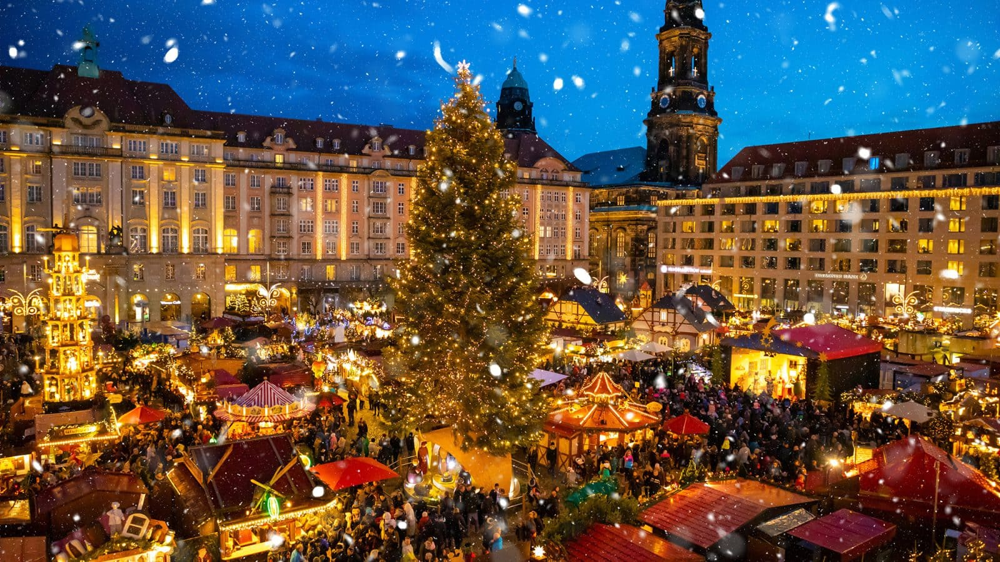

In Germany, "Christklots" is the of burning a log all night long on Christmas Day, which according to tradition is believed to protect the home from thieves and bad luck for the rest of the year. Throughout Germany, Advent is the most atmospheric time of the year until Christmas Eve on December 24, the day after Christians celebrate the birth of Jesus. Christmas Eve is the most important holiday. On Christmas Eve, the family gathers for dinner and to go to church together at Mesa on Christmas Eve. The tradition of decorating the Christmas tree began in Germany (apparently the first Christians to bring decorated Christmas trees into their homes were the Germans in the 16th century). Later, decorating them became a custom in other countries as well.
